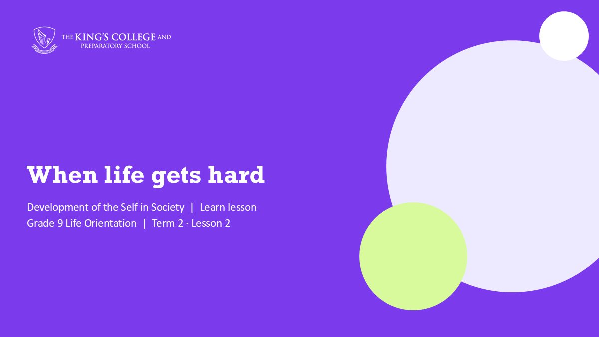

Term 2 · Lesson 2 · Learn lesson
When life gets hard
Start here
Today I will
- Tell the difference between stress, anxiety and depression
- Compare healthy and unhealthy ways of coping
- Know where to get help, for myself or a friend
Show with your hand: is Grade 9 feeling like a calm sea, a bit choppy, or a storm right now? No need to explain.
Words to Know
| Word | Meaning |
|---|---|
| Stress | The body and mind's response to pressure or a demand. Some stress is normal and can help you perform. |
| Anxiety | Worry or fear that is stronger than the situation needs and does not go away. |
| Depression | An illness: sadness, emptiness or loss of interest that lasts two weeks or more and affects daily life. |
| Coping | What you do to deal with a difficult situation or feeling. |
| Stigma | Negative labels or shame attached to something, such as mental illness. |
| Resilience | The ability to recover and keep going after hard times. |
Slides

Videos
Notes
Everyone goes through hard times. Grade 9 brings tests, subject choices, changing friendships and pressure from social media. Most of the time we cope, but sometimes feelings become too big to handle alone. This lesson helps you to tell normal stress from anxiety and depression, to choose healthy ways of coping, and to know where to get help. Mental health is as important as physical health, and asking for help is a sign of strength.
Mental health
Mental health is our emotional, psychological and social well-being: how we think, feel, handle stress, relate to others and make choices. Like physical health, it can be good on some days and poor on others. The World Health Organization estimates that about one in seven young people aged 10–19 worldwide experiences a mental health condition, so you are never the only one.
Stress
Stress is the body and mind's response to pressure or a demand. When you face a challenge, your body releases stress hormones such as adrenaline and cortisol. Your heart beats faster and you feel alert: this is the 'fight or flight' response. A little stress can help you focus before a test or a match. Stress becomes harmful when it is constant and there is no time to recover.
| Signs of too much stress | Examples |
|---|---|
| Body | Headaches, tight shoulders, stomach aches, tiredness, getting sick more often |
| Feelings | Irritable, overwhelmed, tearful, worried |
| Thinking | Forgetting things, trouble concentrating, negative thoughts |
| Behaviour | Sleeping or eating too much or too little, snapping at people, procrastinating |
Anxiety
Anxiety is worry or fear that is stronger than the situation needs and does not go away when the situation is over. Everyone feels anxious sometimes, for example before an oral. An anxiety problem is when the worry is constant, hard to control and stops you doing normal things.
- Constant worry, often about many different things.
- A racing heart, sweating, shaking or a tight chest.
- Stomach aches or feeling sick, especially before school.
- Trouble falling asleep.
- Avoiding places, people or tasks that cause the worry.
- Panic attacks: sudden, intense fear with physical symptoms. They are frightening, but they pass.
Depression
Depression is a real illness, not a weakness, a phase or a lack of faith. A person may have depression when several of these signs last for two weeks or more and affect daily life:
- Feeling sad, empty, hopeless or irritable most of the day.
- Losing interest in things they used to enjoy (sport, friends, hobbies).
- Sleeping much more or much less than usual.
- Eating much more or much less; weight changes.
- Tiredness and low energy; everything feels like an effort.
- Trouble concentrating; marks drop.
- Pulling away from family and friends.
- Feeling worthless or guilty; thoughts of death or self-harm.
Depression is treatable. Talking therapy (counselling), support from family and friends, healthy habits and, for some people, medicine prescribed by a doctor help people recover. Anyone who has thoughts of hurting themselves must tell a trusted adult the same day, or call SADAG on 0800 567 567.
Stress, anxiety and depression compared
| Stress | Anxiety | Depression | |
|---|---|---|---|
| What it is | A response to pressure | Worry or fear that won't switch off | An illness of low mood and loss of interest |
| How long | Passes when the pressure passes | Continues even without a clear cause | Two weeks or more |
| Typical sign | Feeling overwhelmed | Constant worry, racing heart | Sadness, emptiness, losing interest |
| What helps | Planning, rest, exercise, talking | Talking, breathing skills, counselling | Professional help, support, healthy habits |
Healthy and unhealthy coping
Coping is what you do to deal with a difficult situation or feeling. Unhealthy (counterproductive) coping gives quick relief, but it makes the problem worse over time. Healthy (productive) coping helps you recover and grow stronger: this is called resilience.
| Unhealthy coping | Why it doesn't help | Healthy alternative |
|---|---|---|
| Bottling it up, isolating | Feelings build up and you feel more alone | Talk to someone you trust |
| Late-night scrolling or gaming | Less sleep means worse mood and concentration | A sleep routine; phone out of the bedroom |
| Alcohol, drugs, vaping, energy drinks | Brief relief, then a crash, addiction and more problems | Exercise, time outside, a hobby |
| Self-harm | Causes injury and shame; the pain behind it remains | Tell an adult today; call a helpline |
| Lashing out at others | Damages relationships and adds guilt | Breathing exercises, journalling, prayer, taking a break |
Breaking the stigma
Stigma is the negative label or shame attached to something. Many teenagers don't ask for help because they are afraid of being called 'crazy', 'weak' or 'dramatic', or because their family never talks about feelings. You can help to break the stigma: talk about mental health calmly and normally, never joke about mental illness, and treat a friend who is struggling with the same kindness you would show someone with a broken arm.
Where to get help
| Who | How they help |
|---|---|
| Parents, family, a teacher, the school counsellor, a pastor or youth leader | Listen, support you and help you find professional help |
| A doctor or clinic | Can assess and treat anxiety and depression |
| SADAG (South African Depression and Anxiety Group): 0800 567 567 | Free counselling and crisis support |
| Childline: 116 | Free, confidential help for children and teens |
| Lifeline: 0861 322 322 | Counselling and crisis support |
What happens in the brain and body
When you feel threatened, your brain sends a signal to release adrenaline and cortisol. Your heart rate and breathing speed up and your muscles tense, ready to fight or run. This is useful in real danger. But your brain reacts in a similar way to a test, an argument or a frightening post online. If the stress system is switched on most of the time, it wears you out: you sleep badly, get sick more easily and find it hard to think clearly. Calming activities such as slow breathing, exercise, time outside and talking to someone help to switch the system off again.
A simple calming skill: box breathing
- Breathe in slowly through your nose for a count of 4.
- Hold your breath for a count of 4.
- Breathe out slowly through your mouth for a count of 4.
- Hold for a count of 4, then repeat four or five times.
- Use it before a test, an oral, a match or when you can't fall asleep.
Social media and mental health
Social media can help us stay connected, but it can also increase stress and low mood. Comparing yourself to edited 'perfect' lives, fear of missing out, cyberbullying and scrolling late at night all affect how you feel. Healthy habits: turn off notifications during study time, keep your phone out of the bedroom at night, unfollow accounts that make you feel worse, and notice how you feel after you scroll.
Case study: Aarav's exam stress
Before the mid-year exams, Aarav started waking up at 3 a.m. with his heart racing. He had stomach aches every morning and stopped going to youth group because he 'had to study'. He snapped at Thabo for no reason. At first Aarav thought he just had to push harder. Thabo noticed and said: 'You're not yourself. Have you spoken to anyone?' Aarav spoke to his mother, who took him to the school counsellor. The counsellor taught him box breathing, helped him draw up a realistic study timetable with breaks, and suggested he go back to youth group. Within two weeks he was sleeping better. Aarav was surprised how much it helped to say out loud what he was worried about.
Questions to think about: Which signs showed that Aarav's stress had become too much? Which healthy coping strategies helped him? How did Thabo act as a good friend?
Worked exam answers
Question: Distinguish between stress and depression. (1 x 2) (2)
Answer: Stress is a response to pressure that passes when the pressure passes ✓ whereas depression is an illness in which sadness or loss of interest lasts two weeks or more and affects daily life ✓.
Question: Analyse how stigma can prevent teenagers from getting help for depression. (1 x 4) (4)
Answer: Teenagers are often afraid of being labelled 'weak' or 'crazy' ✓ so they hide their feelings instead of telling anyone ✓ especially when friends joke about mental illness ✓ which means the depression may get worse before they get the treatment and support that would help them recover ✓.
Be able to distinguish between stress, anxiety and depression (use 'whereas'), list the signs of depression (two weeks or more), compare healthy and unhealthy coping, explain how stigma stops teens from getting help, and recommend where to get help with the result.
It's OK not to be OK, but don't stay alone with it: talk to someone. SADAG 0800 567 567 · Childline 116.

'Cast all your anxiety on him because he cares for you.' What could it look like to give your worries to God, and how can He also use people to help you?
In class: What could help Aarav?
- Read: Aarav has exams in two weeks. He can't sleep, gets stomach aches every morning, has stopped going to youth group and snaps at his friends.
- List the signs that Aarav is not coping.
- Is this stress, anxiety or possibly depression? What would you need to know to tell?
- Suggest TWO healthy coping strategies for Aarav.
- Who could he talk to, at school and outside school?
Test yourself
- What is the difference between stress and depression?
- Name TWO signs of anxiety.
- Name ONE South African helpline and its number.
Show answers
1. Stress is a response to pressure that passes when the pressure passes; depression is an illness with sadness or loss of interest lasting two weeks or more. 2. Any two: constant worry, racing heart, stomach aches, poor sleep, avoiding things, panic. 3. SADAG 0800 567 567; Childline 116; Lifeline 0861 322 322.
Finished early?
Find reliable help and plan a message that makes it easier to ask for it.
- Go to the SADAG website (www.sadag.org) and find one resource or tip for teenagers.
- Write it down, together with the SADAG helpline number.
- Plan a short poster slogan that helps break the stigma around asking for help.
- Practise box breathing once: in for 4, hold for 4, out for 4, hold for 4.